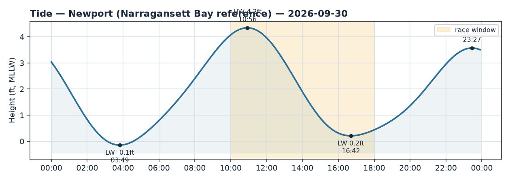
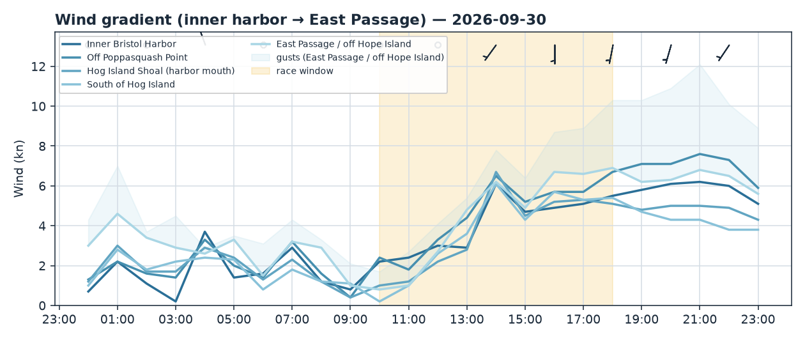
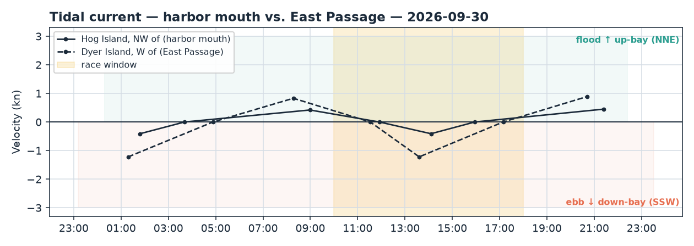

Bristol Harbor · Rhode Island
Wed 30 Sep 2026 · Daysail
A gentle, sunny fall drifter — light SSW breeze; go out early-to-mid afternoon and keep expectations mellow.
The day
This is a mellow, easy-going day on the water — think lazy family daysail, not a spirited rail-down romp. It's a beautiful late-September afternoon: sunny skies, mild air in the upper 60s, and no rain in sight. The catch is the wind, which stays light all day (mostly 4–5 kt), so you'll be ghosting along rather than powered up. If you love a peaceful, quiet sail — this is a lovely one. If you need pressure to have fun, temper your hopes.
Wind
Expect a soft southerly (SSW) through the day, in that gentle 4–5 kt range — genuine drifter territory, occasionally nudging toward a soft-but-sailable ghost. Nothing to reef here at all. The live anemometers back this up: Newport at the Passage mouth is reading around 4–5 kt SSW, gusting into the 7s, and interestingly the real wind has been running a touch stronger than the models forecast — so there's a fair chance you'll find a knot or two more than the raw numbers suggest, especially out toward Hog Island and the East Passage where the breeze funnels in off the water. Your best window is early-to-mid afternoon (roughly 12:30–16:00), when the southerly is most established. Soft spots to expect: it'll go patchy and fickle up inside the inner harbor and especially in the lee of the Poppasquash shore to the west — if you park there, drift out toward the harbor mouth and the more open water to the south to find what breeze there is.
Tide & current
High water is at 10:56 AM (about 4.3 ft) and low is at 4:42 PM (just 0.2 ft — quite low). Plan any tight-to-shore or shallow-edge poking for the earlier, higher part of your sail; by late afternoon the water's thin, so give the harbor edges and any shoals a wide berth. Current is gentle inside the harbor — near slack at the mouth around noon, then a mild ebb building through the afternoon (setting SSW, seaward) off Hog Island. Out in the East Passage the ebb runs harder (over a knot), so if you sail out that way you'll feel it carrying you seaward — just leave yourself an easy trip home. With such light wind there's no real wind-against-tide chop to worry about; it'll stay smooth and friendly.
Good to know
Gorgeous conditions for comfort: sunny to mostly sunny, highs around 68–69°F, and zero rain or thunderstorm risk. It's fall, so bring a layer for when the sun dips or the breeze picks up over the water — it'll feel cooler out there than on the dock. Sun protection is still worth it. With winds this light there's nothing gusty to fret over, but as always toss the life jackets on. A relaxed plan: head out around noon or a bit after to catch the best of the afternoon southerly, and aim to be back by late afternoon before the water gets thin at low tide near 4:40 and the breeze fades with the day. Enjoy a quiet one.


